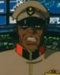
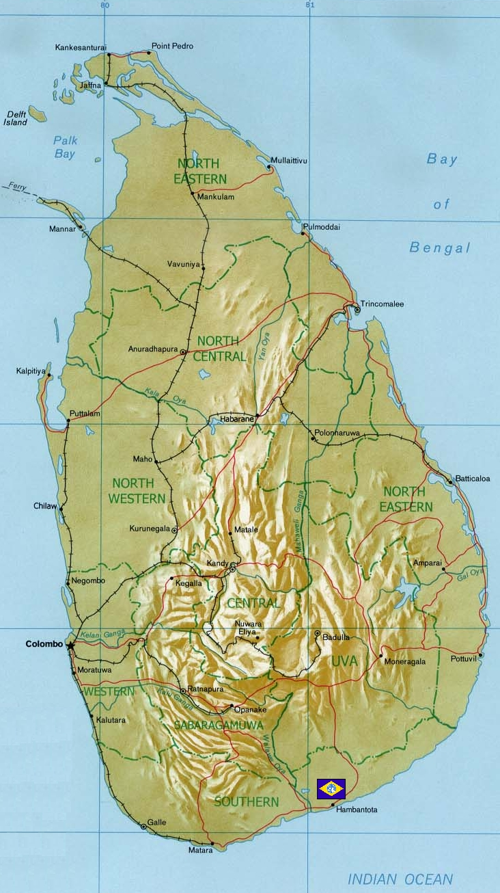

Ceylon Ceylon
Indian Ocean, Sri Lanka Island Jungle Fortress Kowen Although closer to the ground fortress of New Delhi to the middle of the Indian ocean, the Federal base in Sri Lanka serves as an important watchpost over the Federal controlled ocean sector. Federal convoys use this thoroughfare to traffic between India and Southeast Asia, as well as to Torrington and Honolulu far away. The fortress itself is surrounded by an impossibly thick jungle, and Kowen has been known to use this to great effect, preferring guerilla tactics and infantry above modern strategies.  Kowen One of Revils closest friends and staunchest allies, General Kowen is well known throughout the area as an efficient commander, and he and Kojima have created an excellent defense for the subcontinent. Having great faith in his soldiers, Kowen is known to trust the judgement of lower officers, giving troops a large amount of autonomy with only a few operational directions. Ceylon  |